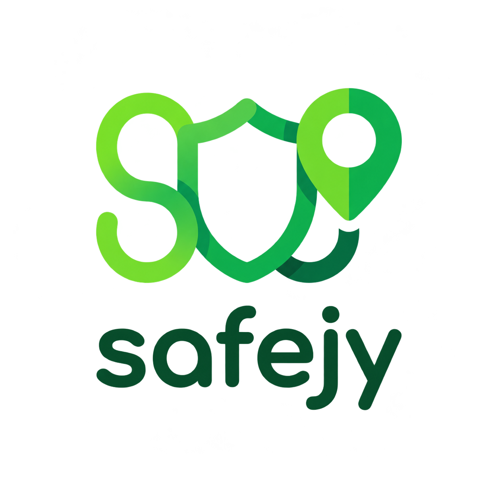

Você sabia?
18,5%
dos roubos e furtos de celulares do Brasil em 2024 foram na cidade de São Paulo.
Fonte: CNN Brasil, 24.07.2025 safejyPost Instagram · 1080 × 1350

Manual da Marca · Versão 1.0 · Novembro 2026
Diretrizes de identidade visual, voz e aplicação da SAFEJY. Documento interno para a equipe e parceiros.
Antes de começar
A SAFEJY fala de um assunto que dá medo: ser roubado numa cidade que você não conhece. O trabalho da marca é o contrário do medo. A gente quer que a pessoa feche o app pensando "beleza, sei por onde ir", e não "essa cidade é horrível".
Por isso o manual inteiro gira em torno de uma ideia simples: verde é o normal, vermelho é a exceção. Se uma peça da SAFEJY parecer um noticiário policial, ela está errada — mesmo que esteja tecnicamente bonita.
— Direção de Marca
Dar a quem não conhece São Paulo a mesma informação que um morador experiente teria antes de sair de casa.
Não somos uma marca de segurança. Somos uma marca de informação para circular. A diferença parece pequena, mas muda tudo: segurança promete; informação orienta. E nenhuma rota garante ausência de risco — isso precisa estar no nosso DNA.
Uma mistura do Protetor (cuidado) com o Sábio (conhecimento). Pensa naquele amigo paulistano que, quando você chega, diz: "vai por aqui que é mais tranquilo". Ele não te assusta, não te trata como criança e não exagera.
Descartamos o "Herói" de propósito: herói precisa de vilão, e a gente não quer transformar a cidade em vilã.
Tom baixo, frases curtas, nada de exclamações. No visual: muito respiro e verde dominante.
Diz de onde vem cada dado. No visual: grade rígida, números em fonte mono, mapa limpo.
Fala com quem é de fora. No visual: cantos arredondados, logo em minúsculas, fotografia de gente real.
Não promete o que não pode. No visual: alertas claros, sem esconder o vermelho quando ele é necessário.
Regra de ouro: descreva o trajeto, nunca o lugar. "Este trajeto passa por uma área de risco" é informação. "Este bairro é perigoso" é estigma — e pode ofender quem mora lá.
| Situação | ✓ Escreva assim | ✕ Evite |
|---|---|---|
| Rota com alerta | Este trajeto passa por uma área de risco. Veja os detalhes antes de sair. This route crosses a risk area. Check the details before you go. | ⚠️ PERIGO! Você vai passar por uma zona de assaltos! |
| Rota sem alerta | Nenhuma área de risco identificada neste trajeto. No risk areas found along this route. | Rota 100% segura! Pode ir tranquilo! |
| Erro de GPS | Não conseguimos encontrar sua localização. Tente informar o endereço. We couldn't find your location. Try entering the address. | Erro 403: falha no serviço de geolocalização. |
| Dica de uso | Evite usar o celular parado na calçada. Confira a rota antes de sair. | Cuidado com bandidos! Esconda seu celular! |
Exclamação em alerta soa como sirene. Ponto final passa confiança.
Use "sem alertas", "mais tranquilo". Nunca "100% seguro".
Número sem fonte é boato. "Segundo a SSP-SP, ..."
O símbolo une duas formas que todo mundo reconhece em meio segundo: o escudo (cuidado) e o pin de localização (lugar, rota). Juntos dizem exatamente o que o produto faz: cuidar do seu trajeto.
O nome vem em minúsculas e numa letra arredondada e pesada. Foi intencional: maiúsculas em marca de segurança soam como viatura. Minúsculas soam como um app que você quer abrir.
No texto corrido, escreva SAFEJY em caixa alta. O "safejy" minúsculo é só no logotipo.
Mantenha livre ao redor do logo um espaço igual à altura da letra "s" (chamamos de x). Nada entra nessa área: texto, borda da página ou outro logo.
| Logo completo — digital | 120 px de largura |
| Logo completo — impresso | 30 mm de largura |
| Símbolo isolado — digital | 24 px |
| Favicon | 16 px (versão simplificada) |
| Ícone do app | 1024 px, cantos do sistema |
Esticar ou achatar o logo.
Vermelho é cor de risco. O logo é sempre verde, branco ou preto.
Use uma faixa sólida ou escolha uma área calma da imagem.
Sombra, brilho, bisel, contorno: nenhum.
O "safejy" é desenho fixo. Não redigite em outra letra.
O pin sempre aponta para baixo, como no mapa.
Escolhemos uma escala inteira de verde em vez de um verde só. Assim a marca consegue ser séria (floresta) e viva (lima) sem nunca sair da mesma família. O vermelho existe, mas mora fora da marca: ele é sinalização, como uma placa de trânsito.
#0B1F15#101B15#173B2A#075633#087C3B#2FA552#76E21E#92E956#DDF8C8#EDF7E8#F6FAF5#C83F39Zonas e alertas de risco. Tema claro.#FF9C91Mesma função, tema escuro.#E8A317Avisos leves: dados antigos, GPS fraco.#087C3BO estado normal é a própria cor da marca.#4F6657Texto secundário.#D5E2D7Linhas e bordas.#FFFFFFFundo principal.60 neutros · 30 verdes de marca · 8 lima para destaque · 2 vermelho só quando houver risco real. Se uma tela tem mais vermelho que lima, algo está errado.
| Par | Razão | Nível |
|---|---|---|
| Floresta em branco | 12,4 : 1 | AAA |
| Rota em branco | 5,3 : 1 | AA |
| Lima noturno no escuro | 11,7 : 1 | AAA |
| Risco em branco | 5,0 : 1 | AA |
| Lima em branco | 1,7 : 1 | Reprovado |
Atenção: lima nunca é cor de texto sobre fundo claro. Use como fundo de destaque (com texto floresta) ou em traços grossos.
Um app de rota é lido em pé, andando, com sol batendo na tela. Por isso escolhemos letras de abertura grande (os "a", "e" e "s" bem abertos) e números que não se confundem.
Títulos
Manrope
Geométrica, mas com cantos suaves — conversa com o "safejy" arredondado. Pesos 700 e 800. Alternativa de sistema: Segoe UI Bold / SF Pro Display.
Texto e interface
Inter
Feita para tela. Legível em 12 px. Pesos 400, 500 e 600. Alternativa: -apple-system, Segoe UI, Arial.
Dados e coordenadas
23°33′ S
JetBrains Mono, só para números, fontes e coordenadas. Passa a sensação de "dado verificado". Nunca em parágrafos.
Planeje seu caminho.
Por que existimos.
Veja as áreas de risco.
Indique a origem e o destino em São Paulo e receba uma indicação para a rota escolhida.
Segurança no seu trajeto
O mapa é o nosso grafismo principal. Mas não é o mapa do Google: é um mapa desenhado à mão de designer, com quarteirões arredondados, ruas claras e só a informação que importa.
Traço 1,8 px em grade de 24 px. Cantos e pontas arredondados. Sem preenchimento, exceto o pin.
Botões e campos 8 px · cartões 16 px · selos 999 px (pílula).
Sistema de 8 px: 4, 8, 16, 24, 32, 48, 64.
Fundo claro da cor + borda 1 px + ícone + texto. Nunca só cor.
Confira a rota novamente se mudar o horário.
Este trajeto passa por uma área de risco.
Passa por 1 área de risco.
App · tema claro
Along this route.
App · tema escuro
Rota conferida
antes de sair
Adesivo · motorista de app · 10 cm
23°33′ S · 46°38′ W
Cartão de visita · 90 × 50 mm
Você sabia?
18,5%
dos roubos e furtos de celulares do Brasil em 2024 foram na cidade de São Paulo.
Fonte: CNN Brasil, 24.07.2025 safejyPost Instagram · 1080 × 1350
Welcome to São Paulo
Folheto para hotéis · A6 bilíngue
Antes de publicar qualquer peça, passe por estas 10 perguntas. Se alguma resposta for "não", volte uma casa.
:root {
--safejy-forest: #173B2A; --safejy-shield: #075633;
--safejy-route: #087C3B; --safejy-leaf: #2FA552;
--safejy-lime: #76E21E; --safejy-mist: #EDF7E8;
--safejy-paper: #F6FAF5; --safejy-bg: #FFFFFF;
--safejy-text: #173B2A; --safejy-muted: #4F6657;
--safejy-line: #D5E2D7; --safejy-risk: #C83F39;
--safejy-warn: #E8A317;
--safejy-radius-sm: 8px; --safejy-radius-lg: 16px;
--safejy-font-display: "Manrope", "Segoe UI", sans-serif;
--safejy-font-body: "Inter", -apple-system, "Segoe UI", Arial, sans-serif;
--safejy-font-data: "JetBrains Mono", Consolas, monospace;
}
:root[data-theme="dark"] {
--safejy-bg: #101B15; --safejy-paper: #15251B;
--safejy-text: #EDF5ED; --safejy-muted: #B5C7B9;
--safejy-line: #3C5142; --safejy-route: #92E956;
--safejy-lime: #92E956; --safejy-risk: #FF9C91;
}Razões de contraste calculadas pela fórmula WCAG 2.1 (luminância relativa). AA exige 4,5 : 1 para texto normal.